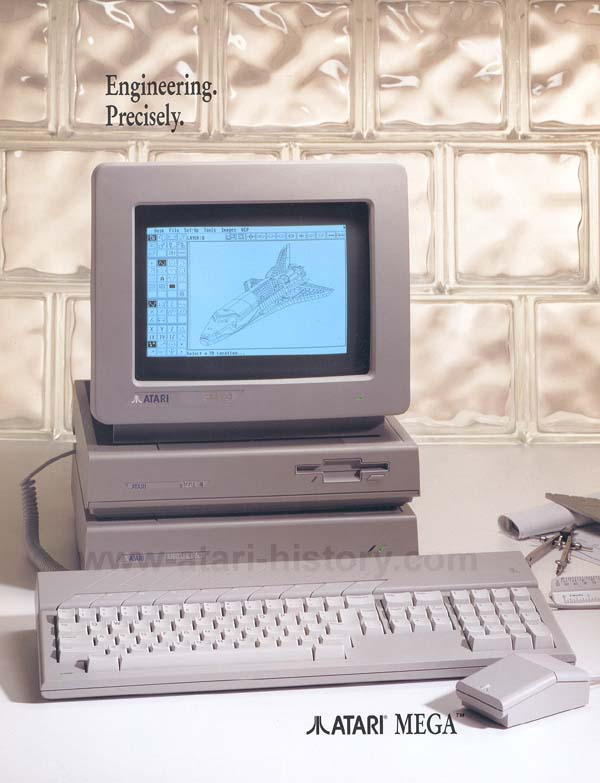
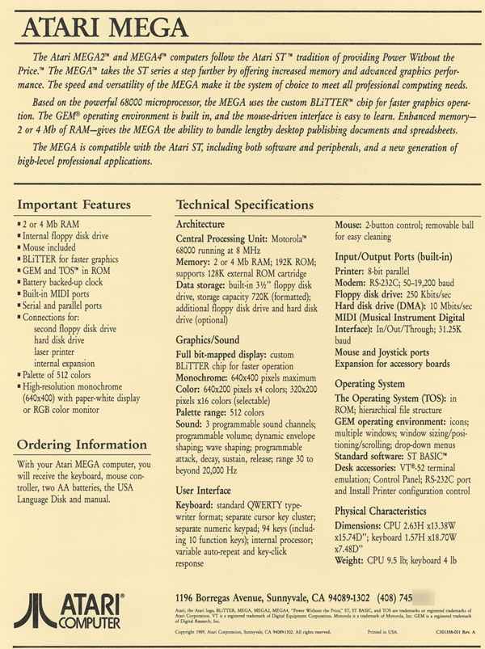

The Mega ST was Atari's first major enhancement to the ST line of computers. With 1MB or 4MB memory (expandable with add-on cards), built in BLITTER graphics chip, and MegaBUS expansion Slot all packaged into a nice clean pizza-box case the ST line of computers received a boost in power, expandability and professional looks. Atari was moving forward in the right direction. Also introduced along with the Mega ST line was Atari's direction into the desktop publishing field. Atari introduced the SLM804 Laser Printer which attached to the Atari DMA interface port and also the desktop publishing package. Also introduced was the Atari Megafile hard drive system to add stackable harddrive modules onto the Mega ST.
Technical Specifications
